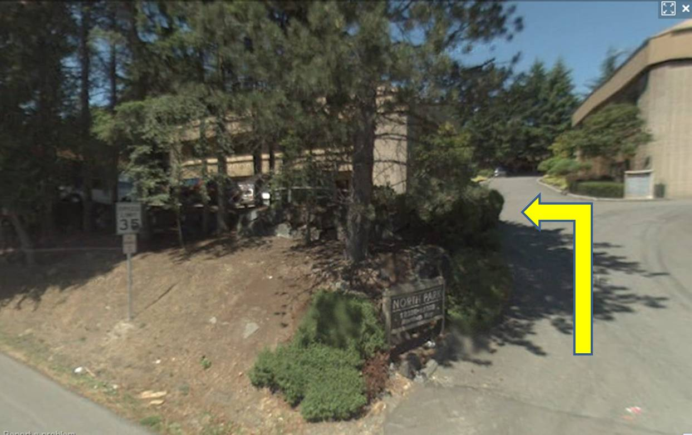

Directions
Please note: the Meyer Mobility Center (for medical equipment) at 12328 Northup Way and the Administration Offices at 12356 Northup Way are located in 2 different buildings in the same Business Park.
From I-405 north or south:
Take 520 East
Take the next exit, 124th Ave NE
Turn right on Northup Way
Turn right into the first driveway on your right, "North Park" Business Park.
(Directly opposite the bright orange light house for Public Storage.)
Mobility (Equipment pickup/dropoff)- turn left in front of the building on your left.
Administration Office is in building on the right, upper level.
Note, as of June 1, 2012, with new 520 on-ramp from northbound I-405:
520 splits into West (left) and East (right).
The eastbound direction splits into Exit 124th Ave NE (Left), and East 520 (Right). Follow signs to exit on 124th Ave NE.
From Redmond on 520 West:
Exit on 148th Ave NE, and turn Left at the light (south)
Go south to the third traffic light
Turn right on NE 20th Street / Northup Way
Go all the way to the 124th Ave NE intersection
Ater the traffic light, turn right into the first driveway on your right, "North Park"
(Directly opposite the bright orange light house for Public Storage.)
Mobility (Equipment pickup/dropoff)- turn left in front of the building on your left.
Administration Office is in building on the right, upper level.